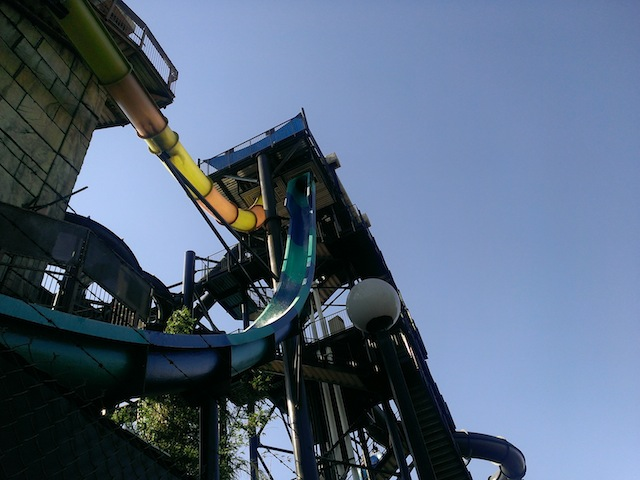

| |
Bonzai Pipelines Review

We're on the Bonzai Pipelines, home to two different slides. The first slide we'll talk about is the Blue Trapdoor Slide. This is the good one. We get in the capsule, they lock the doors, and countdown (LAME!!!). It's much better when they just drop you at random. And then you drop. It's got a little bit of backscratching, but I must admit. I love it. I love the trapdoor slides. Well, at least the straight ones. Moving onto the Orange Trapdoor Slides. This one sucks. We get in, countdown, floor drops. We go down a small drop and into some straight track. A perfect oppertunity for water to get into us. Yep. It's Waterboarding!! The Slide. After that unpleasent moment, we head down into the helix to the bottom. It's not very fun and scratches our back A LOT!!! Ugh. This slide sucks. So I definetly recommend going down the Blue Bonzai Pipeline and avoiding the Orange Bonzai Pipeline.
9/10 for Blue
4/10 for Orange
Location: Six Flags Hurricane Harbor
Opened: 2014
Built by: ProSlide
Last Ridden (Blue): July 22, 2023
Last Ridden (Orange): June 18, 2022
Bonzai Pipelines Photos

Home
|